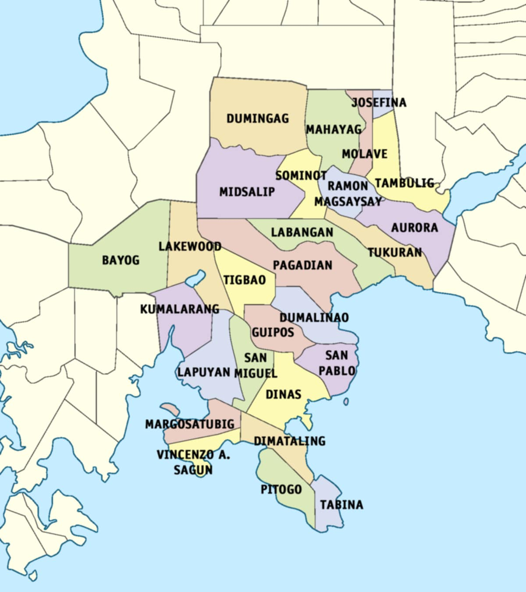

About Zamboanga del Sur
The Province of Zamboanga del Sur is bounded on the north by Zamboanga del Norte, on the south by the Moro Gulf, on the southwest by Zamboanga Sibugay, and on the east and northeast by Lanao del Norte, Misamis Occidental, and Panguil Bay.
📍 Map of Zamboanga del Sur
